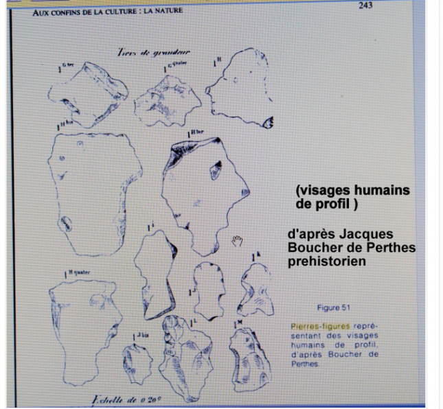
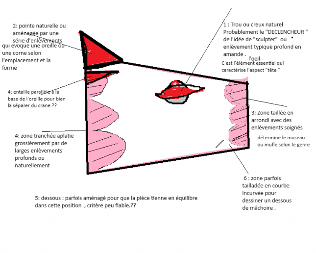

Les Nucléus Énigmatiques de Wimereux
Étude et analyse lithique d'un corpus d'artefacts inclassables du Paléolithique
Introduction & Contexte
Dans le cadre des recherches sur l'industrie lithique préhistorique du site de la Pointe aux Oies à Wimereux, la question des objets inclassables ou retouchés à visée figurative suscite de nombreux débats au sein de la communauté scientifique.
Cette étude porte sur un ensemble d'une trentaine de nucléus et pièces taillées insolites. Sélectionnées au sein d'un stock d'outils et de nucléus classiques façonnés selon les mêmes techniques, ces pièces présentent des caractéristiques singulières.
Démarche & Précisions Scientifiques
Il est essentiel de lever toute ambiguïté concernant la nature de ces objets et d'éviter les amalgames historiques :
Distinction avec les « Pierres Figures »
Ces artefacts ne doivent en aucun cas être confondus avec les controversées « pierres figures » du siècle dernier, dépourvues de toute trace anthropique.
À l'inverse, l'étude présentée ici s'appuie exclusivement sur des pierres portant des traces de taille humaine indéniables (enlèvements, plans de frappe, retouches).
Paréidolie, « Déclencheur » et Canevas
Comment expliquer la présence de formes évoquant des silhouettes animales sur ces pièces lithiques ? L'hypothèse repose sur trois concepts fondamentaux :
1. La Paréidolie
Phénomène naturel consistant à percevoir des formes familières dans des objets bruts.
2. Le Déclencheur
Une caractéristique naturelle du silex exploitée par quelques coups de percuteur ciblés pour révéler l'image.
3. Le Canevas Récurrent
Une forme globale récurrente en triangle tronqué et un angle de vue directeur privilégié.
Schémas Explicatifs du Canevas

Schéma 1 : Organisation des éléments structurants récurrents

Schéma 2 : Angle directeur du tailleur et ligne de frappe
Découvrez l'analyse détaillée et les photographies des pièces :
Consulter le Catalogue des Artefacts (N° 1 à 8) →